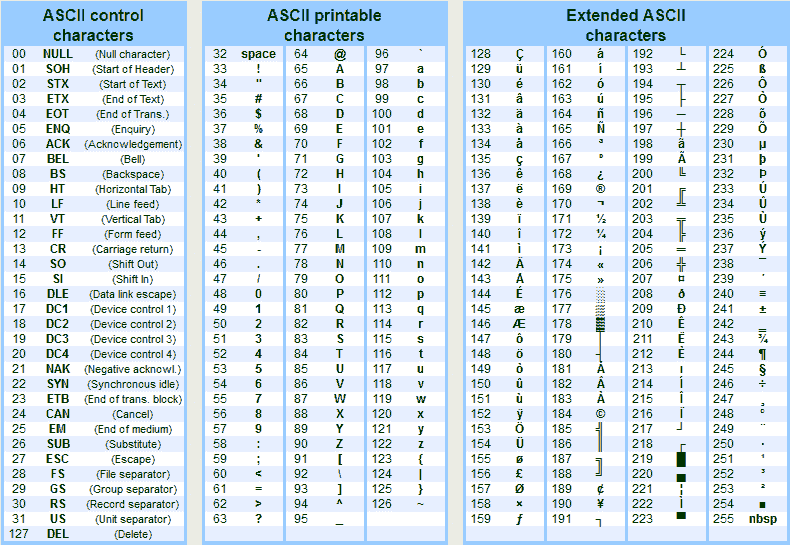
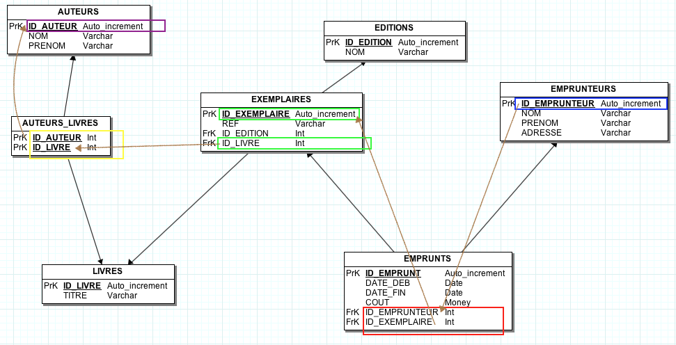
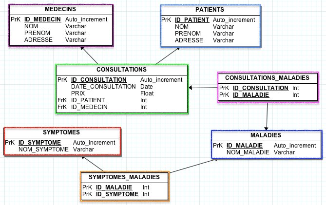

Pour la conception du MCD, téléchargez JMERISE(Site)
| Descriptif | Finalité | Cours | |
|---|---|---|---|
| MCD | Modèle conceptuel de données | Représente de manière structurée les données du système d'information ainsi que le sens et le lien entre ces données, à travers des : Entités, Associations, Attributs, Instances. | |
| MLD | Modèle logique de données | L'entité devient une table, l'identifiant deviant une clef primaire, l'attribut de l'entité devient un attribut de la table, transformations des relations 1-N, N-N | |
| MPD | Modèle physique de données | Constitue le script SQL généré par le MLD à importer en tant que fichier .sql dans le SGBDR ou à copier coller (son contenu) dans une console de requêtes du SGDBR. | |
| LCD | Langage de contrôle des données | Gérer les comptes utilisateurs du SGBDR et leurs droits, attribuer des privilèges à ces utilisateurs, commit, rollback | |
| LDD | Langage de définition de données | Create, Drop, Alter, Rename -> sur Tables et Bases | |
| LID | Langage d'interrogation de données | Select * from (projection et classement), order by (tri), where (restriction), union, intersect, minus (différence), jointures, opérateurs, fonctions, agrégation | |
| LMD | Langage de manipulation de données | Insertion de tuples, modification de tuples, suppression de tuples | |
| TERMINAL | Commandes sql à executer en ligne de commande | Connexion à un serveur MySQL, à une base de données, lister des bases et des tables, décrire la structure d'une table, traitement en batch, sauvegarde, spool |
C'est le nom du champ du tuple. Appelé aussi nom d'un champ.
TUPLE = n-uplet = enregistrement = row = ligne d'une rangée de résultats sql
> somme des valeurs / instances / occurences d'une ligne d'attributs de la table
> appelé aussi instance de l'entité (instance = tuple, entité = table)
(!) dans les requetes le nom_attribut entre crochets inversés simples `` peut être une syntaxe utilisée.
| TYPE | STORAGE | POWER (BYTES) | UNSIGNED : MIN / MAX VALUES | SIGNED : MIN / MAX VALUES |
|---|---|---|---|---|
| TINYINT | 1 | 2^8 | 0 / 255 | -128 / 127 |
| SMALLINT | 2 | 2^16 | 0 / 65 535 | -32 768 / 32 767 |
| MEDIUMINT | 3 | 2^32 | 0 / 16 777 215 | -8 388 608 / 8 388 607 |
| INT or INTEGER | 4 | 2^48 | 0 / 4 294 967 295 | -2 147 483 648 / 2 147 483 647 |
| BIGINT | 5 | 2^64 | 0 / 18 446 744 073 709 551 615 | -18 446 744 073 709 551 615 |
| FLOAT | 0 / 3.402823466E+38 | -3.402823466E+38 / -1.175494351E-38 | ||
| DOUBLE | 0 / 2.2250738585072014E-308 | -1.7976931348623157E+308 / -2.2250738585072014E-308 | ||
| BIT | 0 / 1 | |||
| BOOLEAN | TRUE / FALSE | |||
| SERIAL | Alias > BIGINT UNSIGNED NOT NULL AUTO_INCREMENT UNIQUE | |||
| DATE -> en insertion sql 'yyyy/m/d' | '1000-01-01' to '9999-12-31' | |||
| DATETIME -> en insertion sql 'Y/m/d H:i:s' | ||||
| TIME | '-838:59:59' to '838:59:59' | |||
| YEAR | 1901 to 2155 | |||
| CHAR | fixed-length | 0 / 255 | ||
| VARCHAR | variable-length | 0 / 255 | ||
| TEXT | 0 / 65 535 | |||
| BLOB | binary values (images) | |||
| ENUM | list of values | |||
| BIGINT |
NUMERICS (3) = 0 to 999
STRING (7) = setters
TIMES, BLOB, ENUM NOTHING
NOT NULL > Pas de valeur par defaut (Aucune)
NOT NULL DEFAULT 'valeurParDefaut' > Mettra en valeur valeurParDefaut si rien n'est saisi (tel que defini :)
NULL > Ne remplira pas le champ mais mettra la valeur NULL en mémoire.
Va servir pour faire des recherches style WHERE NOM=NULL par exemple.
DEFAULT CURRENT_TIMESTAMP > La date sera mise à jour lors de la création de l'enregistrement (Requête Insert).
au format 'YYYY-MM-DD HH:MM:SS'
Si l'on ne met rien prend par défaut l'interclassement de la BDD défini au préalable ou par défaut
> RECOMMANDE : préserve l'unincité de la BDD pour l'encodage.
BINARY > Différencie la majuscule de la minuscule en binaire (case-sensitive)
utile pour les identifiants et passwords
Applicable sur des nombres
UNSIGNED > Interdit nombre négatif
UNSIGNED ZEROFILL > Interdit nombre négatif + remplit la taille du champ avec des zeros
on update CURRENT_TIMESTAMP > La date sera mise à jour à chaque modification de l'enregistrement (Requête Update).
au format 'YYYY-MM-DD HH:MM:SS'
CLE JAUNE (Primaire) > Modification possible : primary key retirable
CLE GRISE (Primaire) > Modification impossible : le type est obligatoirement clé primaire (serial)
On accepte des valeurs nulles
INDEX UNIQUE Clé primaire avec contrainte unicité
INDEX Les données seront aussi organisées selon ce champ (pour des recherches)
ex : mettre un index au niveau du sexe, du code postal (prends de la place en mémoire)
attention plus il y a de valeurs dans l'attribut, plus ça va être lourd.
FULL TEXT Fonctionne avec MyISAM. Permet des recherches avec notion de pertinence.
InnoDB > +lent mais accepte les transactions. Si crash peut récupérer les données.
MyISAM > Système plus rapide pour des recherches full text (recherche avec notion de priorité).
Un mot clé trouvé plus souvent signifiera un résultat plus pertinent.
Pas besoin de mettre des guillemets pour insérer un numérique en valeur dans un attribut de type string.
ex: NOM=1.2 fonctionne 1.2 sera transformé en '1.2'
| OPERATEUR | SIGNIFICATION |
|---|---|
| = | egal |
| != | different |
| < > | different |
| > | superieur |
| >= | superieur ou egal |
| < | inferieur |
| <= | inferieur ou egal |
| between ... and ... | entre ... et ... |
| in | dans |
| like | comme |
| is NULL | indefini |
| any | au moins 1 |
| all | tout |
[Requete_SQL] UNION [Requete_SQL]
Recupération des enregistrements liées au deux tables sans doublons
[Requete_SQL] INTERSECT [Requete_SQL]
Recupération des enregistrements appartenant à la fois au deux tables sans doublons
[Requete_SQL] MINUS [Requete_SQL]
Récupération enregistrements sur table 1 mais pas table 2
| Base binaire (2) | Base décimale (10) | Base hexadécimale |
|---|---|---|
| 0000 | 0 | 0 |
| 0001 | 1 | 1 |
| 0010 | 2 | 2 |
| 0011 | 3 | 3 |
| 0100 | 4 | 4 |
| 0101 | 5 | 5 |
| 0110 | 6 | 6 |
| 0111 | 7 | 7 |
| 1000 | 8 | 8 |
| 1001 | 9 | 9 |
| 1010 | 10 | A |
| 1011 | 11 | B |
| 1100 | 12 | C |
| 1101 | 13 | D |
| 1110 | 14 | E |
| 1111 | 15 | F |
Voici un octet représenté dans le tableau ci-dessous : 00000000
| BITS | POWER | NUMERIC |
|---|---|---|
| 0/1 (éteint/allumé) | 2⁷ | 128 |
| 0/1 | 2⁶ | 64 |
| 0/1 | 2⁵ | 32 |
| 0/1 | 2⁵ | 32 |
| 0/1 | 2⁴ | 16 |
| 0/1 | 2³ | 8 |
| 0/1 | 2² | 4 |
| 0/1 | 2¹ | 2 |
| 0/1 | 2⁰ | 1 |

Toutes les requêtes et valeurs présentées sur cette chaîne de videos sont disponibles sur cette page dans les rubriques dédiées.
Pour toutes les requetes ci-dessous, n'oubliez pas :
CREATE
table.creer
CREATE TABLE [nom_table] (
[nom_attribut] [type_attribut] (taille) [valeurParDefaut],
..,
..,
.. //Pas de virgule sur dernier attribut
)
ENGINE=[moteur_choisi]
CREATE WITH PRIMARY KEY
tableAvecClePrimaire.creer
CREATE TABLE [nom_table] (
[nom_attribut] [type_attribut] (taille) [valeurParDefaut],
..,
..,
PRIMARY KEY ([nom_attribut])
)
ENGINE=[moteur_choisi]
(!) Ne pas oublier NOT NULL AUTO_INCREMENT sur la declaration de la primary key
ENGINE VALUES (TABLE)
InnoDB MyISAM BLACKHOLE CSV MEMORY ARCHIVE MRG_MYISAM
SHOW CREATE (TABLE)
table.recuperation (instructions.creation)
SHOW CREATE TABLE [nom_table]
MODIFY TABLE NAME
table.modification(nom)
ALTER TABLE [OLD_TABLE_NAME] RENAME [NEW_TABLE_NAME]
ALTER
table.modification
ALTER TABLE [nom_table]
table.colonne(ajout)
ADD [nom_attribut] [type_attribut] (taille) [valeurParDefaut]
(!)Rajouter entre (taille) et [valeurParDefaut] le mot clé DEFAULT si l'on veut insérer une valeur par défaut, ne pas oublier également pour cette valeur les simple quotes en cas de caractères pour le type d'attribut.
table.colonne(suppression)
DROP [nom_attribut]
table.colonne(modification)
CHANGE [old_nom_attribut] [new_nom_attribut] [new_type_attribut] (new_taille) [new_valeurParDefaut]
table.colonne(modification.type)
MODIFY [nom_attribut] [old_type_attribut] [new_type_attribut]
DROP
table.suppression
DROP TABLE [nom_table]
ID
table.ajout(clé_primaire)
[ ./ADD/CHANGE/MODIFY] [nom_attribut] [type_attribut] (taille) [valeurParDefaut] AUTO_INCREMENT PRIMARY KEY FIRST
(!) Ne jamais mettre l'ID d'une table par défaut en null.
(!) Laisser l'ID en INT(11), sa (taille) n'a pas d'impact important sur la mémoire.
(!) Toujours utiliser le simple quote et l'antislash (en cas d'échappement nécessaire) pour les attributs.
(!) Valeur par défaut laisser le champ vide.
table.reinitialisation.id (sans_perte_de_données)
ALTER TABLE [nom_table] DROP [nom_attribut_quiest_ID]
ALTER TABLE [nom_table] ADD [nom_attribut_quiest_ID] [type_attribut](taille) NOT NULL AUTO_INCREMENT FIRST, ADD PRIMARY KEY ([nom_attribut_quiest_ID])
(!)Si l'attribut se nomme id, cela donne
ALTER TABLE [nom_table] DROP `ID`
ALTER TABLE [nom_table] ADD `ID` INT(11) NOT NULL AUTO_INCREMENT FIRST, ADD PRIMARY KEY (`ID`)
table.ajout(clé_étrangère)
ALTER TABLE [table_parent] ADD FOREIGN KEY fk ([colonne_table_parent_qui va devenir clé étrangère]) REFERENCES [table_enfant] ([colonne_id_de la table enfant])
on suppose ici que la colonne de la table parent qui va devenir étrangère existe déja : et attention la valeur de ses attributs doit être par défaut a NULL pour éviter une erreur SQL 1452 (on ne peut avoir des valeurs dans les attributs id des deux tables qui n'existeraient pas au moins dans chacune d'entre elles).
ADD
table.donnees (ajout.1ligne)
INSERT INTO [nom_table]
VALUES (NULL, [valeur], [valeur], [valeur])
(!) sur cette syntaxe une valeur pour chaque champ doit être présente.
table.donnees (ajout.plusieurslignes)
INSERT INTO [nom_table]
VALUES (NULL, [valeur], [valeur], [valeur]),
(NULL, [valeur], [valeur], [valeur]),
(NULL, [valeur], [valeur], [valeur])
table.donnees (ajout.selectionAttributs)
INSERT INTO [nom_table] ([nom_attribut], [nom_attribut])
VALUES ([valeur], [valeur]),
([valeur], [valeur])
table.donnees (ajout.syntaxeSpécifiqueMysql)
INSERT INTO [nom_table] SET [nom_attribut]=[valeur], [nom_attribut]=[valeur], ...
pour un tuple uniquement à chaque fois.
DELETE
table.donnees (suppression.allTuples)
DELETE FROM [nom_table]
table.donnees (suppression.1Tuple)
DELETE FROM [nom_table] WHERE [nom_attribut]=[valeur] LIMIT [de 1 à Nb de tuples à limiter]
table.donnees (id.reinitialisation+ suppression.allTuples)
TRUNCATE [nom_table]
UPDATE
table.donnees (modification.1Tuple)
UPDATE [nom_table] SET [nom_attribut]=[valeur] WHERE [nom_attribut]=[valeur] (on prends svent l'id en where)
ou selon objectif
UPDATE [nom_table] SET [nom_attribut]=[nom_attribut] WHERE [nom_attribut]=[valeur]
ou selon objectif
UPDATE [nom_table] SET [nom_attribut]=[nom_attribut +/-* opérations] WHERE [nom_attribut]=[valeur]
SELECT
table.donnees (selection.champs.allTuples)
SELECT [nom_attribut], [nom_attribut] FROM [nom_table]
table.donnees (selection.champs.1Tuple)
SELECT [nom_attribut], [nom_attribut] FROM [nom_table] WHERE [nom_attribut]=[valeur] (avec l'id en where) LIMIT [Nombre_enregistrements]
LIMIT 0, 15 > Pour une pagination prends les 15 premiers enregistrements
LIMIT 16, 30 > Pour une pagination prends les 16 à 30 enregistrements
* > Selectionne tout les [nom_attribut] du tuple
table.donnees (selection.champs.allTuples. tri)
SELECT [nom_attribut], [nom_attribut] FROM [nom_table] ORDER BY [nom_attribut] [ASC / DESC]
table.donnees (selection.3tables.memeTemps)
SELECT AT1, AT2
FROM TAB1 C, TAB2 CP, TAB3 V, TAB4 F
WHERE C.AT3 = CP.AT3
AND C.AT3 = V.AT3
AND C.AT3 = F.AT3
SELECT NOM, PRENOM
FROM CLIENTS C, CODES_POSTAUX CP, VENDEUR V, FOURNISSEURS F
WHERE C.CODE_POSTAUX = CP.CODE_POSTAUX
AND C.CODES_POSTAUX = V.CODES_POSTAUX
AND C.CODES_POSTAUX = F.CODES_POSTAUX
SELECT COUNT([nom_attribut]) FROM [nom_table] >>> Ne comptera pas les valeurs de [nom_attribut] à NULLSELECT COUNT(*) FROM [nom_table]SELECT COUNT(*) as [nom_renommage] FROM [nom_table]SELECT COUNT(*), [nom_attribut], [nom_attribut], [nom_attribut] as [nom_renommage] FROM [nom_table] GROUP BY [nom_attribut]SELECT MAX([nom_attribut]) FROM [nom_table]SELECT MIN([nom_attribut]) FROM [nom_table]SELECT AVG([nom_attribut]) FROM [nom_table][...] FROM [NOM_TABLE] [alias_correspondance]
Or (valeurs multiples)
WHERE [nom_attribut]=[valeur] OR [nom_attribut]=[valeur]
And (entonnoir)
WHERE [nom_attribut]=[valeur] AND [nom_attribut]=[valeur]
ou Syntaxe plus simple
WHERE [nom_attribut] IN ([valeur], [valeur], [valeur])
Like (jokers)
WHERE [nom_attribut] LIKE [%valeur%]
> % pour n'importe quoi (pas de notion de pertinence attention)
> c'est un select évolué
(!) [%valeur‰] sous format entre double quotes
!= different de
FONCTIONS NUMERIQUES
attribut.conversion_ valeur_absolue(chiffre)
ABS(nom_attribut)
attribut.arrondissement_ valeur(chiffre)
ROUND(nom_attribut)
attribut.arrondissement_ entier_superieur(chiffre)
CEIL(nom_attribut)
attribut.arrondissement_ entier_inferieur(chiffre)
FLOOR(nom_attribut)
attribut.racine_carrée(chiffre)
SQRT(nom_attribut)
attribut.arrondissement_ après_virgule(chiffre)
TRUNCATE(nom_attribut,x_chiffres_voulu_apres_virgule)
attributs.obtenir.reste_ division(attribut_1_par_attribut_2)
MODULO(nom_attribut_1,nom_attribut_2)
attribut.puissance (elevé à la puissance attribut 2)
POWER(nom_attribut_1,nom_attribut_2)
attribut.retour (pluspetitevaleur)
LEAST(n1,n2,..)
attribut.retour (plusgrandevaleur)
GREATEST(n1,n2,..)
atribut.opérations
(nom_attribut)+3
>>> aves les attributs en opérandes
(!) peuvent aussi s'appliquer sur des valeurs numériques, pas que des attributs
(!) Les attributs de type caractères à mettre entre simple quotes à l'intérieur des parenthèses
FONCTIONS CHAINES DE CARACTERES
attribut.concatenation()
CONCAT(nom_attribut_1, ' ', nom_attribut_2) as [nom_choisi_pr_renommer_champ]
attribut.recuperer_taille (chaine_de_caractères)
LENGTH(nom_attribut)
attribut.conversion (minuscules)
LOWER(nom_attribut)
attribut.conversion (majuscules)
UPPER(nom_attribut)
attribut.recuperer_x_ premiers_caracteres
SUBSTR(nom_attribut,x)
attribut.recuperer_x_ premiers_caracteres.a_partir_de_y_caracteres
SUBSTR(nom_attribut,x,y)
attribut.remplacement (une_chaine_x.par_une_autre_y)
REPLACE(nom_attribut, 'x', 'y')
> versionEvoluee
UPDATE [nom_attribut] SET content = REPLACE(content, 'url1', 'url2')
attribut.sonorite (chaine_de_caractere = valeur de prononciation)
SOUNDEX(nom_attribut)
attribut.inversion (chaine_de_caractere)
REVERSE(nom_attribut)
attribut.suppression_espaces (chaine_de_caracteres)
TRIM(nom_attribut)
attribut.suppression_x (chaine_de_caracteres)
TRIM(BOTH 'x' FROM nom_attribut)
attribut.suppression_x_debut (chaine_de_caracteres)
TRIM(LEADING 'x' FROM nom_attribut)
attribut.suppression_x_fin (chaine_de_caracteres)
TRIM(TRAILING 'x' FROM nom_attribut)
> versionEvoluee
UPDATE [nom_attribut] SET content = TRIM(content)
attribut.recherche_full_text
MATCH
FONCTIONS TEMPORELLES
date.ajout(j)
ADDDATE(nom_attribut, j)
date.ajout(y)
ADDDATE(nom_attribut, INTERVAL 1 YEAR)
date.ajout(w)
ADDDATE(nom_attribut, INTERVAL 1 WEEK)
date.ajout(h)
ADDDATE(nom_attribut, INTERVAL 1 HOUR)
date.suppression(x)
SUBDATE(nom_attribut, INTERVAL 1 x)
> existe aussi en DATE_ADD et DATE_SUB
(!) pas d'entier en second paramètre sur ces 2 la.
date.ajout('j h:m:s')
ADDTIME(nom_attribut, 'j h:m:s')
> versionEvoluee
SELECT * FROM [nom_table] < [nom_attribut] < SUBDATE(nom_attribut, INTERVAL x)
sql.dateDuJour
NOW() > date + hms
CURDATE() date
CURTIME() hms
date.différence(2dates)
FROM_DAYS(DATEDIFF(CURDATE(), nom_attribut))
expression.extraire_partie_ date_sans_heures
DATE(nom_attribut)
DATE_FORMAT(nom_attribut, entre_doublequotes_formatchoisi)
>formats
%W weekday name
%d day of the month
%M month name
%Y year numeric four digits
>locales françaises existantes
(!) sur serveurs mutualisés local pas forcément configurée
>preferer le langage de programmation
expression.extraire_avec_zone_locale
DATE_FORMAT(nom_attribut, GET_FORMAT(DATE, 'ZONE'))
(!) si on est en date brute pas en attribut simple quotes a placer
date.jours_ecarts(comptage)
DATEDIFF(date, date_a_comparer)
date.recuperation(annee, mois, semaine, jour)
YEAR(nom_attribut)
MONTH(nom_attribut)
WEEK(nom_attribut)
DAY(nom_attribut)
< versionEvoluee
SELECT * FROM [nom_table] WHERE YEAR(nom_attribut) > x_annee
FONCTIONS D'AGREGATION
Regroupement
GROUP BY [valeur]
Comptage
COUNT(nom_attribut_ou_*)
(!)necessitera un group by pour des agregation complexes.
Moyenne
AVG(nom_attribut_ou_*)
Somme
SUM()
Minimum
MIN()
Maximum
MAX()
Ecart Type
STD()
Variance
VARIANCE()
CREATION CLE ETRANGERE
cleEtrangere_nom_attribut > [nom_table_de_liaison_etrangere]_ID
cleEtrangere_type_attribut > INT (11)
cleEtrangere_index > INDEX
creation.cle_etrangere
ALTER TABLE [nom_table] ADD `[nom_table_de_liaison_etrangere]_ID` INT(11) NOT NULL, ADD INDEX (`UTILISATEUR_ID`)
association.1tuple_table_1. à.1id_tuple_table_2
UPDATE [nom_table] SET [cleEtrangere_attribut] = x
WHERE [nom_attribut_clePrimaire_tableDeLiaison] = y
x = cible le tuple n°x de la table de liaison
y = cible le tuple n°y de la table courante
JOINTURES (Syntaxe spécifique à MySQL)
jointure(interne).table1cleEtrangere< >table2clePrimaire
SELECT [nom_attribut_table1], [nom_attribut2_table1], ..., [nom_attribut_table2], ...
FROM [nom_table1]
JOIN [nom_table2] ON [nom_table2].[nom_attribut_clePrimaire_ tableDeLiaison] = [nom_table1].[cleEtrangere_attribut]
>la table 1 s'affichera à gauche, la table 2 s'affichera à droite
>leurs tuples respectifs seront collées, joints (join) par l'égalité de valeur suivante
>valeur([nom_table1].[cleEtrangere_attribut]) = ([nom_table2].[nom_attribut_clePrimaire_tableDeLiaison])
>(!) attention ce type d'enregistrement n'affiche que les tuples ayant un enregistrement de chaque coté (liaison interne)
jointure(externe).par_la_gauche
SELECT [nom_attribut_table1], [nom_attribut2_table1], ..., [nom_attribut_table2], ...
FROM [nom_table1]
LEFT OUTER JOIN [nom_table2] ON [nom_table2].[nom_attribut_clePrimaire_ tableDeLiaison] = [nom_table1].[cleEtrangere_attribut]
>la table 1 s'affichera à gauche, la table 2 s'affichera à droite
>leurs tuples respectifs seront collées, joints (join) par l'égalité de valeur suivante
>valeur([nom_table1].[cleEtrangere_attribut]) = ([nom_table2].[nom_attribut_clePrimaire_tableDeLiaison])
>(!) affichage des tuples de GAUCHE avec une valeur à 0 sur la clé étrangère
>(!) le mot OUTER est optionnel : LEFT OUTER JOIN produit le même résultat que LEFT JOIN
jointure(externe).par_la_droite
SELECT [nom_attribut_table1], [nom_attribut2_table1], ..., [nom_attribut_table2], ...
FROM [nom_table1]
RIGHT JOIN [nom_table2] ON [nom_table2].[nom_attribut_clePrimaire_ tableDeLiaison] = [nom_table1].[cleEtrangere_attribut]
>la table 1 s'affichera à gauche, la table 2 s'affichera à droite
>leurs tuples respectifs seront collées, joints (join) par l'égalité de valeur suivante
>valeur([nom_table1].[cleEtrangere_attribut]) = ([nom_table2].[nom_attribut_clePrimaire_tableDeLiaison])
>(!) affichage des tuples de DROITE et parcours tout les tuples de la table de droite en parcourant l'ID de 0 à x :
si pas de tuples associés à gauche à un tuple avec id à droite, affichage avec null
>(!) le mot OUTER est optionnel : LEFT OUTER JOIN produit le même résultat que LEFT JOIN
>(!) peut être remplacé par un LEFT JOIN en inversant les tables de gauche et droite
JOINTURES AVEC RECHERCHES (Syntaxe MySQL)
 Mieux comprendre les jointures (naviguer avec le MLD)
Mieux comprendre les jointures (naviguer avec le MLD)
jointures.cumulees(exemple3tables)
SELECT [nom_table1]
LEFT JOIN [nom_table2]
ON [nom_table2].[cle_primaire_table_2] = [nom_table1].[cleEtrangere_deliaisonavec_table2]
LEFT JOIN [nom_table3]
ON [nom_table1].[cleEtrangere_deliaisonavec_table3] = [nom_table3].[cle_primaire_table_3]
> Avance(avecRecherche)
WHERE [nom_table_1/2/ou3][nom_attribut_unedes3tables] = [valeur]
(!) Une clé étrangère peut être mise en index comme ci-dessus ou en clé étrangère
(!) FOREIGN_KEY -> ajoute une notion de dépendance
JOINTURES AVEC ALIAS (Syntaxe tous SGBR)
requetes.ambigues.solutionnement
SELECT [nom_table1].[nom_attribut_table1]
FROM [nom_table1]
requetes.ambigues.solutionnement. avec.alias
SELECT [nom_table1_en_alias].[nom_attribut_table1]
FROM [nom_table1] AS [nom_table1_en_alias]
table.passage (moteur=MyISAM)
ALTER TABLE [nom_table] ENGINE = MYISAM
(!)obligatoire pour les recherches full text
attribut.ajout (indexFulltext)
ALTER TABLE [nom_table] ADD FULLTEXT (nom_attribut)
(!)obligatoire d'indexer tout attribut sur lequel est effectué une recherche full text
attribut.rechercheFullText
SELECT * FROM [nom_table]
WHERE MATCH (nom_attribut) AGAINST (valeur)
(!) le mot clé n'est pas sorti si il est dans plus de 50% du contenu
(!) les espaces entre 2 mots engendre des recherches mots par mots
attribut.rechercheFullText. motpartiel
SELECT * FROM [nom_table]
WHERE MATCH (nom_attribut) AGAINST (vale*)
attribut.rechercheFullText. motscomposés
SELECT * FROM [nom_table]
WHERE MATCH (nom_attribut) AGAINST (valeur_entre_guillementsdoubles_etentreguillementssimples)
attribut.rechercheFullText. +integrerUnMot.-ExclureunAutreMot
SELECT * FROM [nom_table]
WHERE MATCH (nom_attribut) AGAINST ('+valeur -valeur')
attribut.rechercheFullText. precisionPertinence
SELECT *, MATCH (nom_attribut) AGAINST (valeur)
FROM [nom_table]
attribut.rechercheFullText. precisionPertinence.booleen (1sitrouve0sitrouvepas)
SELECT *, MATCH (nom_attribut) AGAINST (valeur IN BOOLEAN MODE)
FROM [nom_table]
WHERE MATCH (nom_attribut) AGAINST (valeur)
ORDER BY pertinence DESC
attribut.rechercheFullText. avecExtansionDeRecherche
SELECT * FROM [nom_table]
WHERE MATCH (nom_attribut) AGAINST (valeur WITH QUERY EXPANSION)
(!) si le mot clé est trouvé il recherche d'autres tuples ou le mots présents dans les résultats y sont également.
par défaut > mysql est en AUTO COMMIT
cela veut dire que la requête est effectuée est impacte directement la base de donnée
= travailler à la volée sur la base de donnée
table.passage(moteur=INNODB)
ALTER TABLE [nom_table] ENGINE = INNODB
(!)obligatoire pour la gestion du système de transaction
demarrage.transaction.execution
START TRANSACTION;
>>> saisirsesrequetessql
COMMIT;
(!) toutes les requetes ne sont plus executées tant que l'on ne fait pas un commit
demarrage.transaction.retrograder
START TRANSACTION;
>>> saisirsesrequetessql
ROLLBACK
demarrage.transaction.checkpoints
START TRANSACTION;
>>> saisirsesrequetessql
SAVEPOINT [nom_de_checkpoint]
>>> saisirsesrequetessql
SAVEPOINT [nom_de_checkpoint]
>>> saisirsesrequetessql
ROLLBACK TO SAVEPOINT [nom_de_checkpoint]
(!)remonte le rollback jusqu'a la requête juste avant le checkpoint désigné.
Cette requête est annulée comme toutes les plus récentes jusqu'a celle ci.
> chaque checkpoint doit prendre un nom différent.
COMMIT;
stocker.requetePreparee
PREPARE [nom_preparation] FROM 'UPDATE nom_table SET attribut1=? WHERE attribut2=?'
executer.requetePreparee
SET @attribut1='valeur'; < guillemets doubles pour une chaine de caracteres
SET @attribut2='valeur';
EXECUTE [nom_preparation] USING @nom @id
supprimer.requetePreparee
DEALLOCATE PREPARE [nom_preparation]
vues = tables virtuelles
permet de creer une table temporaire qui stocke un affichage particulier par exemple le resultat affiché d'une jointure
(!) on ne peut pas effectuer des opérations dans une vue, mais elle se modifie en temps réel en cas de modification de la base.
(!) la vue ne peux etre créer avec 2 attributs de même nom, utiliser les alias
vue.creation
CREATE VIEW [nom_de_la_vue]
AS [requête_sql]
vue.modification
ALTER VIEW [nom_de_la_vue]
AS [requête_sql_modifiée]
vue.requetesDessus
SELECT * FROM [nom_de_la_vue] [requetes_sql]
vue.suppression
DROP VIEW [nom_de_la_vue]
Abordé plus tard.
DEFINITION(Un dump permet d'exporter importer sa base de donnée en ligne de commande)
CMD A TAPER >>>
cd [dossier_contenant_dump] <<< SE PLACER DANS DOSSIER IMPORT EXPORT
mysqldump -uroot -p [nom_table] > [nom_du_dump_voulu].sql <<< EXPORT & CREATION DU DUMP
cd [dossier_contenant_dump] <<< SEPLACER DANS DOSSIER IMPORT EXPORT
mysqldump -uroot -p formationssql < [nom_du_dump_existant].sql <<< IMPORT DU DUMP
Pour les jointures la syntaxe ci-dessous est conseillée car elle compatible avec tous les SGBDR et pas seulement le client MySQL.
 Mieux comprendre les jointures (naviguer avec le MLD)
Mieux comprendre les jointures (naviguer avec le MLD)
table.valeurs_identiques_sur_1_ attribut_entre_plusieurs_tuples
select A1.[id_attribut], A1.[attribut1], A1.[attribut2]
from [nom_table] A1, [nom table] A2
where A1.[attribut2] = A2.[attribut2]
and A1.[id_attribut] != A2.[id_attribut];
table.parcourir_clés_entre_tables_ avec_alias_pour_atteindre_attribut
>>>Quels emprunteurs habitent Eguilles et à emprunter un livre de Shakespeare ? Donnez le nom et le prénom.
select E.NOM, E.PRENOM
from NFA008_EXO03_BIBLIOTHEQUE_EMPRUNTEURS E, NFA008_EXO03_BIBLIOTHEQUE_EMPRUNTS EM,
NFA008_EXO03_BIBLIOTHEQUE_EXEMPLAIRES EX, NFA008_EXO03_BIBLIOTHEQUE_AUTEURS_LIVRES AL,
NFA008_EXO03_BIBLIOTHEQUE_AUTEURS A
where ADRESSE like '%Eguilles'
and E.ID_EMPRUNTEUR = EM.ID_EMPRUNTEUR
and EM.ID_EXEMPLAIRE = EX.ID_EXEMPLAIRE
and EX.ID_LIVRE = AL.ID_LIVRE
and AL.ID_AUTEUR = A.ID_AUTEUR
and A.NOM = 'Shakespeare'

table.comptage_nombre_ exemplaires_pourchaque _edition(parcours_de_clés_étrangères)
>>>Quel est le nombre d'exemplaires pour chaque édition ?
SELECT COUNT(E.NOM), E.NOM FROM NFA008_EXO03_BIBLIOTHEQUE_EDITIONS E, NFA008_EXO03_BIBLIOTHEQUE_EXEMPLAIRES Z
WHERE E.ID_EDITION = Z.ID_EDITION
GROUP BY Z.ID_EDITION
2tables.effectuer_requete_ identique(pas_de_cles _etrangères_ni_lien)+renommage_pour classement
>>>Quels médecins et patients habitent Aix ? Donnez le nom et le prénom et la qualité.
select 'MEDECINS', NOM, PRENOM from MEDECINS where adresse like '%Aix%'
union
select 'PATIENTS', NOM, PRENOM from PATIENTS where adresse like '%Aix%'
table.recherche(valeur_identique). sur.attribut.même.table
>>> Quels sont les patients qui ont le même nom ? Donnez le nom et le prénom.
(!) Un alias de correspondance d'un attribut sous forme nom_alias.[nom_attribut]
est forcement associé à un alias de correspondance de la table de cet attribut sous forme [nom_table] nom_alias
pas forcement dans le SELECT mais obligatoirement dans la requête.
select distinct P1.NOM, P1.PRENOM
from PATIENTS P1, PATIENTS P2
where P1.NOM = P2.NOM
and P1.ID_PATIENT != P2.ID_PATIENT
table.parcourir_clés_entre_tables_ avec_alias_pour_atteindre_attribut
>>>Quels sont les maladies dues à un Syndrome grippal ?
SELECT A.NOM_MALADIE FROM NFA008_EXO02_CABINETMEDICAL_MALADIES A, NFA008_EXO02_CABINETMEDICAL_SYMPTOMES B,
NFA008_EXO02_CABINETMEDICAL_MALADIES_SYMPTOMES C
WHERE A.ID_MALADIE = C.ID_MALADIE
AND C.ID_SYMPTOME = B.ID_SYMPTOME
AND B.NOM_SYMPTOME like '%grippal%'
table.parcourir_clés_entre_tables_ avec_alias_pour_atteindre_attribut
>>>Quel est le prix maximum d'une consultation du docteur AGARD ?
SELECT MAX(PRIX) FROM NFA008_EXO02_CABINETMEDICAL_CONSULTATIONS A, NFA008_EXO02_CABINETMEDICAL_MEDECINS B
WHERE A.ID_MEDECIN = B.ID_MEDECIN
AND B.NOM = 'AGARD'
table.parcourir_clés_entre_tables_avec _alias_pour_atteindre _attribut+ utilisation_dune_fonction_ sur_deuxieme_table (après_and)
>>>Quel est le médecin dont la consultation a le cout le moins élevé ? Donnez le nom, le prénom et le cout
2 SOLUTIONS
SELECT A.NOM, A.PRENOM, MIN(B.PRIX) FROM NFA008_EXO02_CABINETMEDICAL_MEDECINS A, NFA008_EXO02_CABINETMEDICAL_CONSULTATIONS B
WHERE A.ID_MEDECIN = B.ID_MEDECIN
OU
SELECT A.NOM, A.PRENOM, MIN(B.PRIX) FROM NFA008_EXO02_CABINETMEDICAL_MEDECINS A, NFA008_EXO02_CABINETMEDICAL_CONSULTATIONS B
WHERE A.ID_MEDECIN = B.ID_MEDECIN
AND B.PRIX = (select min(PRIX) from NFA008_EXO02_CABINETMEDICAL_CONSULTATIONS);
table.parcourir_clés_entre_tables_avec _alias_pour_atteindre _attribut (comptage_sur_attribut)
>>>Combien de consultations ont été faites dans le cabinet médical pour des Vomissements ?
SELECT COUNT(A.ID_CONSULTATION) FROM NFA008_EXO02_CABINETMEDICAL_CONSULTATIONS A,
NFA008_EXO02_CABINETMEDICAL_CONSULTATIONS_MALADIES B,
NFA008_EXO02_CABINETMEDICAL_MALADIES C,
NFA008_EXO02_CABINETMEDICAL_MALADIES_SYMPTOMES D,
NFA008_EXO02_CABINETMEDICAL_SYMPTOMES E
WHERE
A.ID_CONSULTATION = B.ID_CONSULTATION
AND B.ID_MALADIE = C.ID_MALADIE
AND C.ID_MALADIE = D.ID_MALADIE
AND D.ID_SYMPTOME = E.ID_SYMPTOME
AND E.NOM_SYMPTOME LIKE '%vomissements%'
table.parcourir_clés_entre_tables_avec _alias_pour_atteindre _attribut (comptage_sur_attribut)
>>>Quel est le chiffre d'affaires du cabinet médical pour des états grippaux ?
SELECT SUM(A.PRIX) FROM NFA008_EXO02_CABINETMEDICAL_CONSULTATIONS A,
NFA008_EXO02_CABINETMEDICAL_CONSULTATIONS_MALADIES B,
NFA008_EXO02_CABINETMEDICAL_MALADIES C,
NFA008_EXO02_CABINETMEDICAL_MALADIES_SYMPTOMES D,
NFA008_EXO02_CABINETMEDICAL_SYMPTOMES E
WHERE A.ID_CONSULTATION = B.ID_CONSULTATION
AND B.ID_MALADIE = C.ID_MALADIE
AND C.ID_MALADIE = D.ID_MALADIE
AND D.ID_SYMPTOME = E.ID_SYMPTOME
AND E.NOM_SYMPTOME like '%grippal%'
